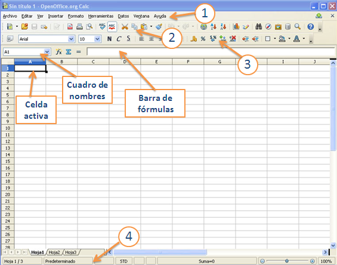

Hojas de cálculo
2. Entorno de trabajo y referencias
Importante
Cuadro de nombres: en él se indica la celda que está activa en cada momento.
Barra de fórmulas: en ella se visualiza el contenido de la celda activa, que puede ser un valor alfanumérico o una función.
El primer paso para empezar a trabajar con el programa es conocer el entorno de trabajo. Es similar a cualquier programa con interfaz GUI y, por tanto, muchas de las barras de herramientas y menús te resultarán conocidos.

Imagen de elaboración propia
Comprueba lo aprendido
En la pantalla de OOo Calc, hemos indicado algunas barras de herramientas con números. Seguro que eres capaz de identificar cuál es cada una.
La pantalla que hemos descrito afecta a la hoja activa en cada momento. Para saber cuál es esta hoja, sólo tienes que fijarte en las pestañas que aparecen en la parte inferior izquierda de la pantalla o en la barra de estado.
Sobre las hojas puedes realizar las acciones habituales de edición: mover, copiar, cambiar nombre, pegar, etc.
Imagen de elaboración propia
Ejercicio resuelto
Abre un archivo de OOo Calc y realiza las siguientes acciones:
1) Cambia los nombres de las tres primeras hojas llamándolas: "factura", "presupuesto", "albarán".
2) Modifica el orden de las hojas y colócalas en el siguiente orden: "presupuesto", "albarán", "factura".
3) Deja activada la hoja denominada "factura".
Obra publicada con Licencia Creative Commons Reconocimiento No comercial Compartir igual 4.0